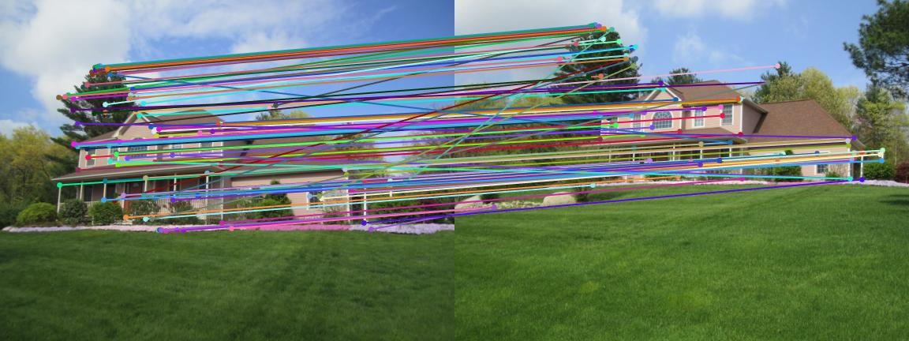

Project 2: Local Feature Matching

Notre Dame interest points
Goal of this project is to create a feature matching algorithm. Algorithm works in three major steps:
- Interest point detection
- Feature extraction
- Feature match
Interest Point Detection
We have used Harris detector as explained in Szeliski 4.1.1 for detecting interest points between two images. We first use gaussian filter with image to add some blur. Next step is to compute horizontal and vertical derivatives of the image Ix and Iy by convolving the original image with derivatives of Gaussians. Then, we convolve each image with a large Gaussian followed by computation of scalar interest measure (harris detector). Final step is normalizing harris detector points and then taking only maximal points as interest point locations.
% Step 1 - Compute the horizontal and vertical derivatives of the image Ix and Iy by convolving the
% original image with derivatives of Gaussians
blurring_filter = fspecial('gaussian', 3, 0.5);
image=imfilter(image,blurring_filter,'same'); % blurring with the help of gaussian filter
[G_x,G_y]=gradient(blurring_filter);
I_x=imfilter(image,G_x); % X derivative
I_y=imfilter(image,G_y); % Y derivative
% Step 2 - Compute the three images corresponding to the outer products of these gradients i.e Ixx,Iyy and Ixy
Ixx = I_x.*I_x;
Iyy = I_y.*I_y;
Ixy = I_x.*I_y;
% Step 3 - Convolution of each of each image with a larger Gaussian
gaussian_filter = fspecial('gaussian', feature_width, 0.5); %designing a filter
I_xx=imfilter(Ixx, gaussian_filter);
I_yy=imfilter(Iyy, gaussian_filter);
I_xy=imfilter(Ixy, gaussian_filter);
% Step 4 - Computation of scalar interest measure using det(A) - alpha(trace(A)^2) i.e.
% lambda0 * lambda1 - alpha(lambda0 + lamda1)^2
alpha = 0.05; % value proposed by Harris and Stephens (1988)
threshold_val = 0.005;
harris_detector = (I_xx.*I_yy - I_xy.^2) - alpha*((I_xx+I_yy).^2);
normalized_detector = harris_detector/max(max(harris_detector));
normalized_detector(normalized_detector < threshold_val)=0;
% Step 5 - Detecting only local maximal points as feature point locations
filter_size = 3;
colfiltered = colfilt(normalized_detector,[filter_size filter_size],'sliding',@max);
border_filter = zeros(size(colfiltered));
padding_size = 10;
border_filter(padding_size+1:end-padding_size, padding_size+1:end-padding_size) = 1;
harris_detector = normalized_detector .*(normalized_detector==colfiltered) & border_filter;
harris_detector(harris_detector)=1;
[y,x] = find(harris_detector);
figure();
imshow(image);
hold on
scatter(x,y,'red');
Feature Extraction
After extracting interest points, we build a descriptor vector for every interest location. For extracting features, we have used SIFT descriptor i.e. Szeliski 4.1.2. These feature vectors are invariant to rotation and translation. In our implementation, we take a 16x16 region around every interest point and divid it into 16 blocks of 4x4. In each block, we calculate gradient for each point and allocate them into 8 bins depending on their theta values. We build a vector of dimension size 128 after we repeat the bin allocation for each point in 16x16 region. We get one vector for each interest point. Normalizing, removing all values under 0.25 and normalizing again further improves our performanceTo further improve the results we normalize each 128 dimension vector, clip all values greater than 0.25 to 0.25 and renormalize.
final_hist=[];
for ind=1:length(x)
% slice image 16x16
row=y(ind);
col=x(ind);
sliced_image=image(row-8:row+7,col-8:col+7);
% slice by bin size
bin_size=4;
x_dash=size(sliced_image,1)/bin_size;
y_dash=size(sliced_image,2)/bin_size;
dim_x=bin_size*ones(1,x_dash);
dim_y=bin_size*ones(1,y_dash);
% Array to Cell Array conversion
sliced_image=mat2cell(sliced_image,dim_x,dim_y);
temp_hist=[];
for i=1:4
for j=1:4
arr=cell2mat(sliced_image(i,j)); % Cell Array to Array conversion
[magnitude,theta]=imgradient(arr);
mag_final=zeros(1,8);
for k=1:4 % 4x4 grid celss
for l=1:4
if (theta(k,l)>=0 && theta(k,l) < 45)
mag_final(1)=mag_final(1)+magnitude(k,l);
elseif (theta(k,l)>=45 && theta(k,l) < 90)
mag_final(2)=mag_final(2)+magnitude(k,l);
elseif (theta(k,l)>=90 && theta(k,l) < 135)
mag_final(3)=mag_final(3)+magnitude(k,l);
elseif (theta(k,l)>=135 && theta(k,l) < 180)
mag_final(4)=mag_final(4)+magnitude(k,l);
elseif (theta(k,l)>=-45 && theta(k,l) < 0)
mag_final(5)=mag_final(5)+magnitude(k,l);
elseif (theta(k,l)>=-90 && theta(k,l)<-45)
mag_final(6)=mag_final(6)+magnitude(k,l);
elseif (theta(k,l)>=-135 && theta(k,l)<-90)
mag_final(7)=mag_final(7)+magnitude(k,l);
elseif (theta(k,l)>=-180 && theta(k,l)<-135)
mag_final(8)=mag_final(8)+magnitude(k,l);
end
end
end
temp_hist=[temp_hist mag_final];
end
end
% normalized to unit length
normalized=norm(temp_hist);
temp_hist=temp_hist./normalized;
for dim=1:128 % 4*4*8
if(temp_hist(dim)>0.25)
temp_hist(dim)=0.25;
end
end
% normalized again
normalized=norm(temp_hist);
temp_hist=temp_hist./normalized;
final_hist=[final_hist;temp_hist];
end
features=final_hist;
Feature match
After generating feature vectors, we try to find the most similar features for two images. We have used Ratio test distance for finding the similarity. We compute normalized distances between each pair of feature. Next step is to sort all values and then use ratio test for determining a match. We are also calculating confidence for each match and sorting them in descending order before returning matches and their confidence score.
Final Results
Notre Dame


Mount Rushmore

House
Sleeping Beauty Castle Paris